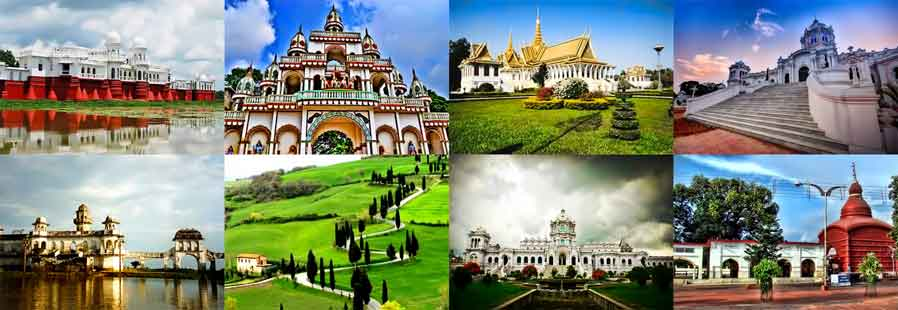

Tripura is a hilly state in northeast India, bordered on 3 sides by Bangladesh,
and home to a diverse mix of tribal cultures and religious groups.
In the capital Agartala, the imposing Ujjayanta Palace is set among
Mughal gardens, and Gedu Mia’s Mosque has white marble domes and
towers. South of the city, Neermahal summer palace sits in the middle
of Lake Rudrasagar and blends Hindu and Islamic architectural styles.
Capital: Agartala
Population: 36.6 lakhs
Chief minister: Biplab Kumar Deb

Climate
The climate of Tripura exhibits a strong seasonal rhythm.
The state is characterised by a warm and humid tropical
climate with five distinct seasons, namely, spring, summer
, monsoon, autumn and winter. Spring starts from late mid-
February & continues till midMarch. ... Humidity is generally
high throughout the year.
Best time to visit
The best time to visit Tripura is from October to May when the weather remains pleasant.
It is suggestible to avoid the rainy season.
How can you reach Tripura?
Agartala is connected with important junctions like Guwahati, New JalpaiGuri,
Sealdah and Anand Vihar at New Delhi by some express train like Tripura Sundari
Express, Kanchanjangha Express and also other important places of the country.